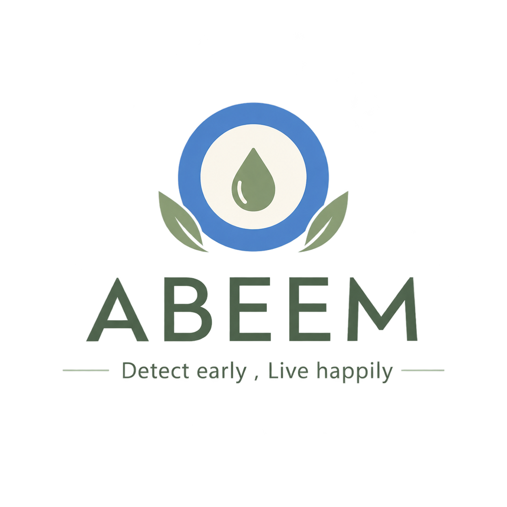

ABEEM
Make the risk visible.
Awareness-Based Early Evaluation and Management of Diabetes
Diabetes Risk Screening
ABEEM is a first-level screening and awareness system. It does not diagnose diabetes.
Choose Screening Mode
Select how the screening will be carried out.
ABEEM
Your guide to diabetes risk screening
Record Your Measurements
The waist and hip measurements you enter here will be carried forward automatically to the questionnaire.
IDRS Questionnaire
These questions determine the official IDRS score.
—
Leg & Foot Observation
Observe the legs and feet. Do not diagnose from these findings.
Everyday Health Habits
These are general awareness points. They do not replace personalised medical advice.
🥗 Diet
Choose a balanced and varied diet. Aim for regular meals and include a variety of vegetables, whole grains, pulses, protein sources and other nutrient-dense foods.
🚶 Physical activity
Regular physical activity helps muscles use glucose and improves insulin sensitivity. Consistency matters more than a single workout.
🧠 Stress management
Use practical ways to manage stress, protect sleep and build routines that are sustainable.
⚖️ Work–life balance
Healthy routines are easier to maintain when work, study, rest, sleep and physical activity are given reasonable space.
🦶 Foot care
- Check your feet regularly.
- Keep them clean and dry.
- Avoid walking barefoot.
- Wear properly fitting footwear.
- Trim toenails straight across.
- Seek professional care for concerning wounds or changes.
🚭 Tobacco & alcohol
Avoid tobacco. Alcohol can affect overall health and may complicate diabetes prevention or management, especially when consumed excessively.
🩺 Regular health checks
Keep up with health checks recommended for you by a healthcare professional, especially if risk factors or concerning findings are present.
🔁 Consider re-screening
After about 6 months, consider repeating a risk screening such as ABEEM or discussing an appropriate follow-up schedule with a healthcare professional, particularly if risk factors or concerning findings are present.
💊 Medication
If medicines are prescribed, take them according to your healthcare professional's instructions. Do not stop or change medication based on this screening.
ABEEM Screening Result
Official IDRS breakdown
Additional findings that may need attention
The IDRS score is kept separate from the additional findings. Additional findings do not add points to IDRS and do not diagnose diabetes.
What this screening suggests
—
ABEEM is a screening and awareness system, not a diagnostic tool. If your score or additional findings are concerning, discuss them with a qualified healthcare professional.
IDRS Screening
Complete the validated IDRS questions first. Only these factors contribute to the official IDRS score.
Blood Glucose Check
Enter the glucometer result recorded by the volunteer.
Screening reference
Fasting ≥126 mg/dL, random ≥200 mg/dL, or 2-hour ≥200 mg/dL is flagged as a high-glucose screening indicator.
This does not diagnose diabetes.Urine Glucose Screening
Record the urine strip result.
Urine glucose is an additional screening indicator. It is not added to the official IDRS score.
Ankle Measurement
Record the ankle measurement taken during the screening.
This measurement is recorded as additional screening information and is not added to the official IDRS score.
Leg & Foot Observation
Select any visible or reported findings.
Foot Care Awareness
This question is compulsory and is recorded separately from the IDRS score.
Basic foot care includes regular observation, appropriate footwear and seeking professional care for concerning changes.
Screening Result
IDRS Breakdown
Additional Screening Indicators
ABEEM Guidance
—
This screening does not diagnose diabetes. The official IDRS score is calculated separately from blood glucose, urine results, ankle measurements and foot observations. Concerning findings should be referred to a qualified healthcare professional.